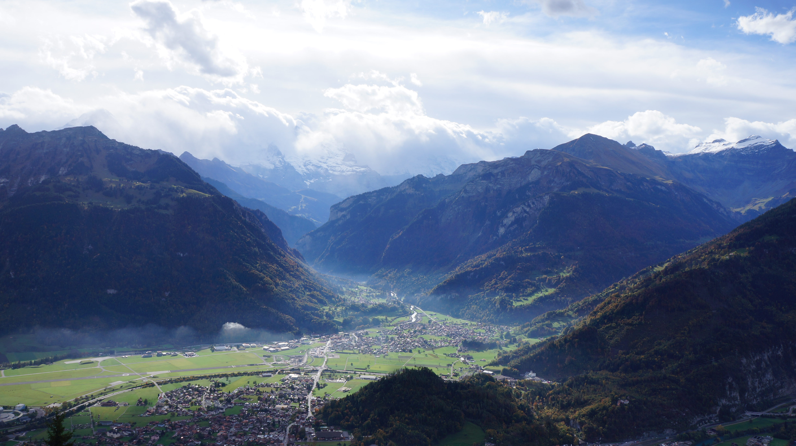

Switzerland
A serene alpine region
I had the pleasure to visit Interlaken, a central town in the Jungfrau region of Switzerland that sits between two,
crystal-clear, torqouise lakes and surrounded by countless summits. One in particular peak is Jungfraujoch, the top of Europe, surrounded by glaciers and eternal snow.

View from Harder Kulm, top of Interlaken, Switzerland / photo by © Jade
3 things Switzerland is famous for
- The Swiss Army knife
- Swiss Currency
- Lindt Chocolate Box
3 reasons why you should visit Switzerland
- Swiss water is the best water in the world
- Autumn here is gorgeous (when I visited)
- Countless outdoor activities
Italy
the Amalfi Coast is a must visit
Around this time last year, I ventured to Italy and discovered the beauty of the Amalfi Coast. The tranquil beauty of seaside life left an unforgettable impression, to which I look foward to revisiting one day.

Seaside view of Amalfi, Italy / photo by © Jade
3 things the Amalfi Coast is famous for
- The production of limoncello liqueur
- Serene setting between the sea and the hills
- Has some of the world's finest fish cusine
3 reasons why you should visit the Amalfi Coast
- Has some of the world's finest sea cusine
- If you love the sea
- tranquility or looking for a stress-free getaway
Bali
The Land of the Gods
According to Edira, from the culture trip, "every Kind of Natural Beauty. Beyond stunning beaches and magical temples, Bali has virtually every kind of natural
beauty. Glorious mountainous areas with lush greenery, scenic lakes, gorgeous waterfalls, iconic rice fields, flower
gardens, gushing sacred rivers and secret canyons all make up the island's landscape."

Twin Waterfall, Bali / photo by © Jade
3 things Bali is famous for
- Surfer's paradise
- Ceremony after Ceremony
- Friendly Balinese people
3 reasons why you should visit Bali, Indonesia
- Plenty of majestic waterfalls and nature to explore
- Lush terraced rice fields
- Wonderful beaches, temples, and Balinese food